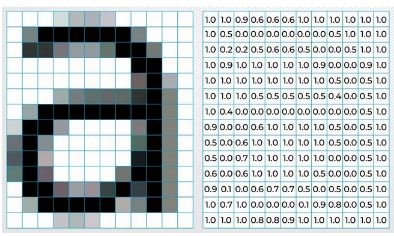
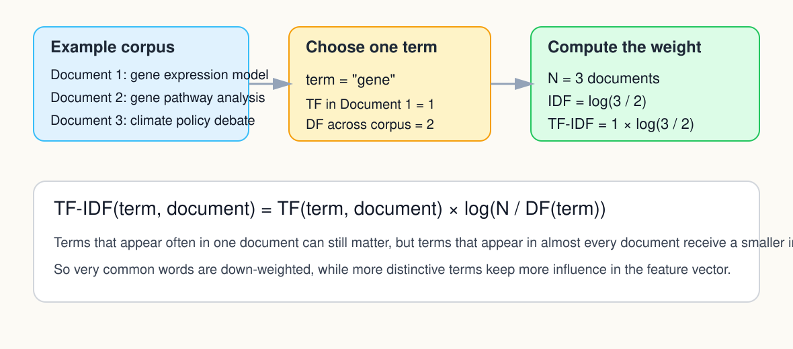
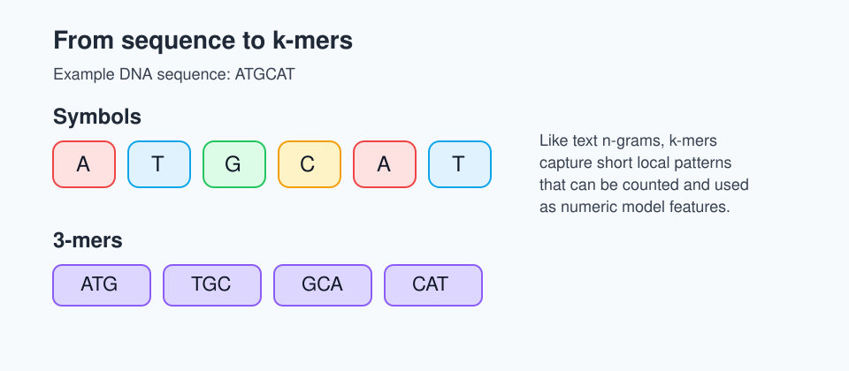
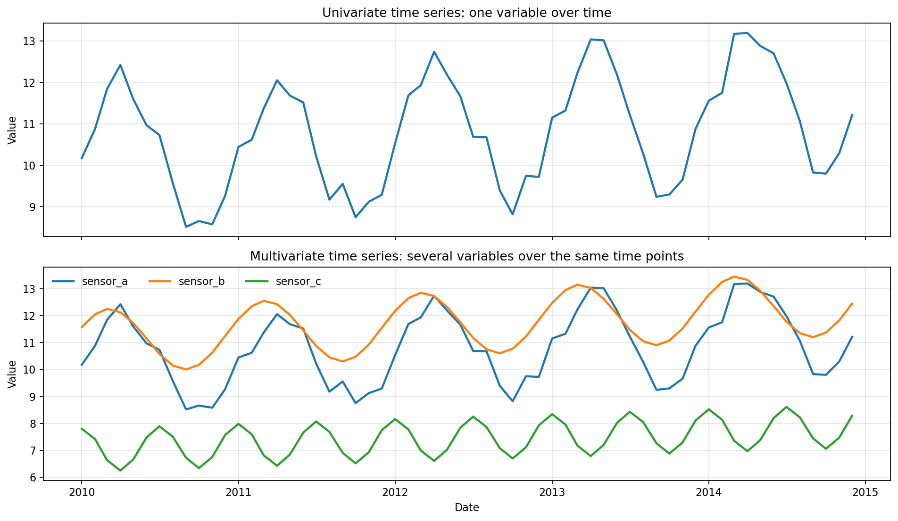

Feature Engineering for Real Problems
Last updated on 2026-04-15 | Edit this page
Estimated time: 55 minutes
Overview
Questions
- What is feature engineering and why does it matter?
- How do features differ across tabular, text, image, time-series, and spectral problems?
- What simple task-specific features can I try before training a more complex model?
Objectives
- Explain why the representation of the data often matters as much as the choice of model.
- Identify common feature-engineering strategies for tabular, text, vision, time-series, spectral, and bioinformatics tasks.
- Choose one or two realistic feature ideas to test on your own problem.
Why feature engineering often comes next
Choosing a model is only part of the job. The model can only learn from the information you give it.
Feature engineering means creating or selecting inputs that make useful patterns easier for a model to detect.
In the teaching sequence here, feature engineering usually comes after you have already chosen a sensible baseline, trained it, and evaluated its first results. That gives you a clearer reason to change the representation instead of changing things blindly.
In many real projects, a better representation can improve results more than switching to a more complex algorithm.
If you want a concise external overview, see the scikit-learn feature extraction guide.
A simple way to think about features
- A raw input is the data as collected.
- A feature is a version of the data that helps a model detect a useful pattern.
- A representation is the overall way the problem is encoded for the model.
Tabular features
Tabular problems often benefit from small, high-value changes.
Common ideas include:
- ratios and rates;
- interaction terms;
- log transforms;
- binned variables;
- domain flags such as “high risk” or “weekend”;
- grouping rare categories.
Ask:
- What would a domain expert would use?
- Which two columns together tell a stronger story than either alone?
- Would the model benefit from a variable being grouped or scaled?
Vision features
Images are arrays of pixel values, but raw pixels are not always the best first representation for a small project.

Useful starter strategies include:
- resizing images to a consistent shape;
- converting to grayscale when colour is not central;
- simple summary statistics such as colour distributions;
- dimensionality reduction of pixel features, for example with PCA;
- hand-crafted descriptors such as edges or texture;
- transfer-learning features from a pre-trained vision model.
If you have limited data, precomputed or pre-trained features are often more realistic than training a large deep model from scratch.
If your first baseline uses raw pixel intensities, PCA can be a reasonable next step because it compresses the image into a smaller set of directions that capture large sources of variation. That can make a classical model easier to train and visualise, even though the new components are less directly interpretable than the original pixels.
In the starter notebook, the first vision scaffold uses Pillow to load, resize, and convert images, then extracts simple summary features with NumPy. If you want richer classical descriptors later, a common next library is scikit-image and its feature module.
Text features
Text usually cannot go straight into a conventional model in raw form. It first needs a representation.
Common starter features include:
- bag-of-words counts;
- TF-IDF features;
- document length;
- counts of domain-specific keywords;
- precomputed embeddings, for example Word2Vec, GloVe, fastText, or sentence-transformers.
For many participants, TF-IDF plus Logistic Regression or Naive Bayes is an excellent first baseline.
In the starter notebook, the text section uses TfidfVectorizer from scikit-learn.
Precomputed embeddings are useful when you want a richer representation of meaning without training a large language model from scratch. Instead of representing a document only as counts of words, embeddings map words or sentences into numeric vectors where similar meanings are closer together.
A concrete TF-IDF example
Suppose you want to classify abstracts into topic areas. Raw sentences are hard for a conventional model to use directly, but you can convert them into features such as:
- counts of words like “cancer”, “climate”, or “genome”;
- TF-IDF scores that highlight terms that are informative in one document but not common everywhere.
One simple way to write TF-IDF is:
\[ \mathrm{TF\text{-}IDF}(t, d) = \mathrm{TF}(t, d) \times \log\left(\frac{N}{\mathrm{DF}(t)}\right) \]
where:
- \(t\) is a term;
- \(d\) is the current document;
- \(\mathrm{TF}(t, d)\) is how often the term appears in that document;
- \(N\) is the total number of documents in the corpus;
- \(\mathrm{DF}(t)\) is the number of documents that contain the term.
The intuition is simple:
- words that appear often in one document may be useful;
- words that appear in nearly every document are less informative;
- TF-IDF keeps the first signal and down-weights the second.
This helps reduce the impact of extremely common words such as “the”, “a”, or other corpus-wide filler words that would otherwise dominate the model simply because they appear everywhere.
An illustrative computation for one term is shown below.

If you need a little local context beyond single words, n-grams can still be useful as an optional extension, but TF-IDF is often the cleaner first concept to teach in an introductory workshop.
Bioinformatics and genomics features
Biological sequences create the same representation challenge as text: raw strings are difficult for conventional models to use without being turned into features first.
If you want practical sequence-handling tools later, useful Python starting points include Biopython for sequence workflows and scikit-learn for the downstream baseline models.
k-mers as the sequence counterpart to n-grams
A k-mer is a short sequence fragment of length \(k\).
Examples:
- for DNA, 3-mers might include
ATG,TGC, orGCA; - for proteins, 2-mers or 3-mers can capture short amino-acid patterns.
Like n-grams in text, k-mer counts or frequencies capture short local patterns in a sequence.
For example, the DNA sequence ATGCAT contains the
3-mers:
ATGTGCGCACAT

You can turn these into numeric features by counting how often each k-mer appears, or by using frequencies rather than raw counts.
Other useful genomics-style features
Depending on the problem, helpful sequence or molecular features might include:
- GC content;
- sequence length;
- motif presence or absence;
- counts of biologically meaningful subsequences;
- one-hot encoded sequence positions;
- known marker presence such as SNPs, mutation indicators, or selected marker panels;
- gene-expression summaries or pathway-level aggregates;
- embedding vectors from a pre-trained biological foundation model.
Marker-style features
Many biological problems already have features that act a bit like domain keywords in text.
Examples:
- a mutation is present or absent;
- a particular SNP genotype is encoded, for example as
0,1, or2copies of the variant allele; - a gene is highly expressed or not;
- a marker panel is positive or negative;
- a known motif occurs in the sequence.
These are often strong starter features because they connect directly to domain interpretation.
For example, in a genomics dataset you might use a small set of known SNPs as marker-style features alongside broader sequence features such as k-mer frequencies or GC content.
Time-series and spectral features
Time-series, sensor, and spectral tasks often benefit from features that capture order, local change, and broader patterns across a measured signal.
Here, a time series means a variable measured in sequence over time, such as daily demand, monthly temperature, or repeated sensor readings. The same ideas also extend to multivariate time series, where several variables are recorded together over time.

The top panel shows a univariate time series with one measured variable. The bottom panel shows a multivariate time series where several related variables are recorded over the same timeline.
Common starter features include:
- lag features;
- rolling means or rolling standard deviations;
- differences or growth rates;
- day-of-week, month, or season indicators;
- peak counts, slopes, or summary statistics over a time window;
- Fourier or frequency-style summaries when periodic structure matters.
In the starter notebook, these time features are created with pandas datetime accessors and rolling-window operations.
For spectral data such as NIRS, mass spectrometry, or other measured signals across wavelength or frequency, many of the same ideas still apply. The axis is not time, but it is still ordered, so neighbouring values carry related information.
That means similar feature ideas can be useful, for example:
- smoothing;
- first differences or derivatives;
- peak height, peak position, or peak area;
- summaries over selected wavelength or frequency ranges;
- transformed versions of the signal when shape matters more than raw magnitude.
The key teaching idea is that time series and spectra are both ordered signals. In both cases, feature engineering often tries to capture local trend, local change, and broader structure rather than treating every position as an unrelated column. This transfer is illustrated in the notebook demo_feature_engineering_timeseries_spectra.ipynb.
Features for specialised scientific data
Some scientific problems need features that come from domain knowledge or specialised analysis methods, not just generic preprocessing.
The earlier sections already covered text, genomics, vision, and ordered signals. Here are a few other common sources of engineered features in scientific work:
Common sources include:
- signal-processing features such as filtered signals, Fourier or wavelet transforms, derivatives, and peak summaries;
- graph or network features such as node degree, centrality, neighbourhood summaries, community labels, or graph embeddings;
- statistical summaries such as moments, quantiles, slopes, correlations, or variability measures computed over windows, regions, or groups;
- mathematical transforms such as log transforms, ratios, normalisations, PCA components, other dimensionality reduction scores, or basis-function coefficients;
- chemical or molecular descriptors such as molecular fingerprints, substructure counts, graph descriptors, or physicochemical properties;
- biological aggregation features such as pathway scores, marker-panel summaries, or outputs from domain-specific pipelines;
- embeddings or latent features from pre-trained domain-specific foundation models.
The key question is not “what is the fanciest feature?” It is “what representation makes the real structure of this problem easier to detect?” In practice, that often means borrowing a useful summary from signal processing, graph analysis, statistics, mathematics, chemistry, or another domain-specific workflow.
Pick one feature change
Choose one concrete feature idea for your own problem and write:
- the raw input you currently have;
- the feature you could create;
- why that feature might make the pattern easier to learn.
- “I have daily sales totals, and I could add day-of-week as a feature because the pattern probably differs between weekdays and weekends.”
- “I have free-text comments, and I could use TF-IDF because the model needs a numeric representation of the words before classification.”
- “I have DNA sequences, and I could use 4-mer frequencies because the model needs a numeric summary of local sequence patterns before classification.”
- “I have gene-expression data, and I could aggregate genes into pathway scores because that may capture biology more directly than thousands of separate raw columns.”
When to stop engineering by hand
Hand-crafted features are powerful, but they are not always enough. When the data are highly unstructured, the model may need to learn its own internal representation. That is where neural networks and transfer learning become useful.
Feature planning cheat sheet
These are starting points to try, not universally best choices. The right model still depends on the task, data size, feature quality, and evaluation results.
| Task type | Starter feature ideas | Possible starter models |
|---|---|---|
| Tabular | ratios, flags, bins, interactions | Linear or Logistic Regression, tree-based models |
| Vision | resize, grayscale, raw pixels plus PCA, summary descriptors, transfer features | Logistic Regression on extracted features, transfer learning later |
| Text | TF-IDF, keyword counts, embeddings | Naive Bayes, Logistic Regression |
| Genomics / sequence data | k-mers, motif counts, GC content, marker presence | Logistic Regression, tree-based models |
| Time series | lags, rolling summaries, seasonal indicators | Linear Regression, tree-based models |
| Spectral / ordered signals | smoothing, derivatives, peak summaries, band averages | Linear Regression, PLS, tree-based models |
| Graph / network data | degree, centrality, neighbourhood summaries, graph embeddings | Logistic Regression or tree-based models on node features |
Key points
- Better features often improve a model more than switching to a more complex algorithm.
- Different task types need different representations.
- Text, images, and time series usually need task-specific feature extraction before a conventional baseline makes sense.
- Spectral data and time-series data are often similar from a feature engineering perspective because both are ordered signals.
- TF-IDF is useful because it reduces the influence of very common words and highlights terms that are more informative for a particular document.
- Genomics and bioinformatics data often need sequence or marker-based features such as k-mers, motifs, SNP markers, or pathway summaries.
- Feature engineering and feature learning sit on the same continuum of representation choices.